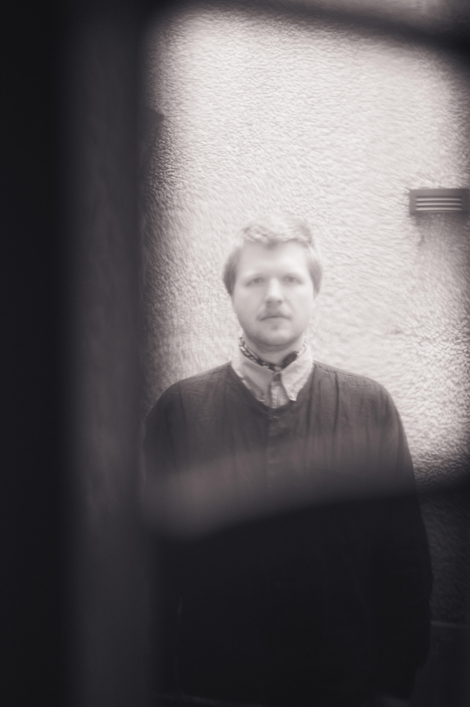

Kristian Enkerud Lien
Musician and composer

Foto: Sofie Berrefjord
Musician and composer Kristian Enkerud Lien is exploring creative music. This can be heard in the following bands: KRISE, Idiotek, ükya, Traum, vårknipa, Dahl/Nilssen-Love/Enkerud Lien, Ellerhusen Holm/Enkerud Lien and as a solo performer.
Contact: kristian.enkerud.lien (a) gmail (dot) com